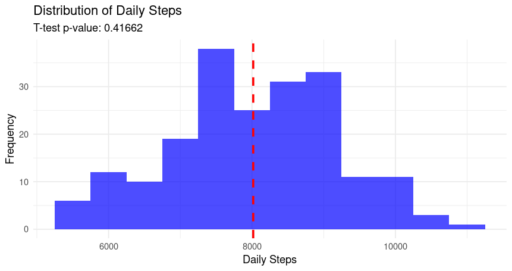
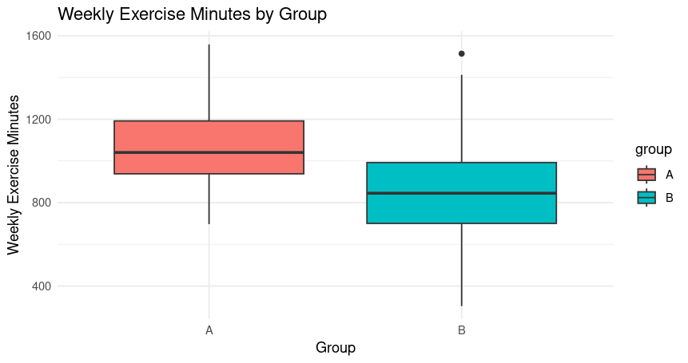

ch1. A/B 테스팅을 위한 기초 통계와 가설 검증 기법
실습과제 8에서 타겟 서비스의 개선안 디자인을 완료하였다면, 이제부터는 과연 새로운 개선 디자인이 기존 디자인에 비하여 KPI를 높이는 효과가 있는지를 알아보겠습니다. 우리는 이 과정을 A/B 테스팅으로 불리는 통계적 분석 기법을 사용하여 실습하려고 합니다.
A/B 테스트는 통계적으로 의미있는 데이터를 활용해서 사업적 중요성(KPI)을 기준으로 제품에 관련된 더 나은 의사결정을 하려는 목적의 평가 기법입니다. A/B 테스트의 시행 방법은 디자인의 구현 과정에서 화면이나 기능을 여러 버전으로 만들어서 서로 다른 사용자 그룹에 각기 다른 것을 보여주고 어떤 버전이 최선의 지표를 이끌어 내는지 찾아냅니다.(20)
우선 실습에 필요한 기초적인 통계 개념들을 학습해 보겠습니다.
가설과 검정
가설(Hypothesis)은 앞서 설명한 바와 같이 특정 현상이나 문제에 대해 검증 가능한 예측이나 추정을 의미합니다. 그리고 검정(statistical test)이란 통계학에서 특정 가설을 검증하기 위한 과정을 의미합니다.
통계학의 가설은 귀무가설(H0)과 대립가설(H1)로 설정할 수 있는데, 귀무가설(H0)은 보통 “차이가 없다” 또는 “효과가 없다”는 가설이고, 대립가설(H1)은 “차이가 있다” 또는 “효과가 있다”는 가설입니다. 우리 실험에서 기존 디자인(A 디자인)의 KPI와 개선 디자인(B 디자인)의 KPI 값이 차이가 없다는 결과가 나오면 귀무가설이 채택된 것입니다.
검정 결과는 데이터에서 검정 통계량을 계산하고, 검정 통계량과 유의 수준을 비교하여 귀무가설을 기각할지 여부를 결정합니다. 유의수준 (α)은 통계적 검정에서 귀무가설을 기각할 기준이 되는 값입니다. 일반적으로 0.05(5%)로 설정됩니다. p-value는 실제 데이터가 귀무가설 하에서 관측될 확률을 나타낸 값으로 , p-value가 유의수준(α)보다 작으면 귀무가설을 기각합니다. 즉 p-value가 유의 수준 값인 0.05보다 작으면 비교한 데이터는 ‘차이가 있다’, 또는 ’귀무가설을 기각한다’라고 판단합니다.
정규성과 등분산성
우리가 시행하려는 A/B 테스트의 방법을 통계학에서는 독립 표본 T-test라고 합니다. 이 테스트 기법을 사용하려면 우선 실험 데이터가 정규성과 등분산성을 만족해야합니다.
정규성(Normality)이란 데이터가 정규 분포(가우시안 분포)를 따르는지를 의미합니다. 정규 분포는 데이터가 평균을 중심으로 대칭적으로 퍼지는 종 모양의 분포입니다. 30개 이상의 데이터가 있으면 중심극한정리(Central Limit Theorem)에 따라 데이터의 평균이 정규 분포에 가까워질 수 있다는 이론이 있습니다. 그러나, 이는 데이터의 분포가 정규 분포를 따른다는 보장은 아닙니다. 정규성을 확인하기 위해서는 여전히 통계적 검정이나 시각적 방법을 사용하는 것이 좋습니다. 정규성을 확인하는 시각적 방법은 히스토그램이나 Q-Q플롯으로 데이터 분포 그래프를 보고 시각적으로 정규 분포의 형태를 갖는지 평가할 수 있습니다. 그리고 통계적 검정 방법은 샤피로-윌크 검정(Shapiro-Wilk Test), 앤더슨-달링 검정, 콜모고로프-스미르노프 검정 방법이 있습니다.
우리 프로젝트에서는 실험 데이터의 수를 30개 이상으로 하여 일단 정규성을 확보하고, 정규성 문제가 발생할 시 통계적 검정(샤피로-윌크 검정) 방법으로 결과를 보정합니다.
등분산성(Homoscedasticity)은 두 개 이상의 그룹이 동일한 분산을 갖는다는 것을 의미합니다. 이는 각 그룹의 데이터 분포가 동일한 정도의 변동성을 가진다는 것을 전제로 합니다. 예를 들어, 두 반의 학생 성적을 비교할 때, 두 반의 성적 분포가 비슷하게 퍼져 있는지 확인하는 것입니다. 등분산성은 박스플롯(Boxplot)을 사용하여 각 그룹의 분포를 시각적으로 비교할 수 있고, 통계적 검정 방법은 F-검정(F-test), 레빈 검정(Levene’s Test), 바틀렛 검정(Bartlett’s Test)이 있습니다. 등분산성이 충족되지 않으면, 비모수 검정이나 등분산성을 가정하지 않는 검정을 사용합니다.
우리 과제에서는 등분산성을 확인하기 위하여 가장 일반적으로 사용하는 F-검정을 실습할 것입니다.
F-test(F-검정)
F-검정은 두 그룹의 분산이 같은지 확인하는 데 유용한 통계적 방법입니다. 이를 통해 두 집단의 분산을 비교하여 등분산성을 검정할 수 있습니다. F-검정의 방법은 F 통계량과 유의 수준을 비교하여 귀무가설(등분산성 가정)을 기각할지 여부를 결정합니다. 등분산성을 만족하지 않는 경우는 비모수 검정이나 Welch의 t-검정 같은 대체 방법을 사용하여 그룹들의 차이를 비교할 수 있습니다.
우리 실습에서는 비교 대상인 A, B 디자인의 응답 데이터에 대하여 먼저 F-test를 시행하여 등분산성을 확인하고, 등분산성을 만족하지 않으면, 등분산을 만족하지 않는 옵션으로 T-test를 실시할 예정입니다. 그럼 F-test 의 시행 방법을 아래의 건강 관리 앱 사례로 알아보겠습니다.
💡 XXX 앱은 사용자의 일일 걸음 수, 수면 시간, 물 섭취량 등을 추적하는 헬스케어 앱이다. 최근 AI 기반의 맞춤형 건강 관리 기능을 새로 도입했다. 이 새로운 기능이 사용자의 건강 습관과 앱 사용 패턴에 미치는 영향을 테스트하고자 한다.
여기에서 기존의 디자인 (A 디자인)과 AI 맞춤형 건강 관리 기능을 적용한 개선 디자인(B 디자인)을 사용한 사람들의 물 섭취 패턴에 변화가 있는지를 알아볼 것입니다. 먼저 두 그룹(기존 디자인 사용 그룹과 개선 디자인 사용 그룹)의 물 섭취량 데이터가 등분산을 만족하는지 보겠습니다. 이하의 예제에서 통계량 측정을 위한 프로그래밍 코드는 R을 기준으로 설명하고, 실습 과제에서는 R 이외의 다른 측정 방법들도 소개하도록 하겠습니다.
# 데이터 생성
before <- c(1.2, 1.5, 1.3, 1.4, 1.6, 1.3, 1.7, 1.5, 1.4, 1.6) # 섭취량, 리터 단위
after <- c(1.5, 1.8, 1.6, 1.7, 2.0, 1.6, 2.1, 1.9, 1.8, 1.9)
# F-검정 수행
var.test(before, after)수행 결과:
F test to compare two variances
data: before and after
F = 0.68389, num df = 9, denom df = 9, p-value = 0.5804
alternative hypothesis: true ratio of variances is not equal to 1
95 percent confidence interval:
0.1698687 2.7533395
sample estimates:
ratio of variances
0.6838906 위의 결과값을 해석해 보겠습니다. 결과값에서 p-value가 0.5804로 나왔네요. p-value가 유의 수준인 0.05보다 큰 값이므로 before 데이터와 after 데이터는 분산의 차이가 없다는 귀무 가설을 채택합니다. 즉 등분산입니다.
그리고 F-검정은 3개이상 집단의 평균을 비교하여 차이 여부 검정하는 경우에도 사용합니다. 즉 비교 디자인이 세 개 이상(디자인 A, B, C안 등) 존재하는 경우는 F-검정으로 평균의 차이가 있는지를 확인할 수 있습니다. 또한 데이터가 수치 데이터가 아닌 범주 데이터일 때는 카이제곱 검정을 사용합니다.
T-test (T 검정)
이제 A/B 테스트의 판단 기준인 T-test에 대하여 알아보겠습니다. T-검정은 두 집단간 평균의 차이가 있는지의 여부를 검정하는 방법입니다. 두 비교 그룹의 평균값이 차이가 있으면, 두 그룹의 값은 차이가 있다고 판단하는 것입니다. T-검정에는 데이터 비교 유형에 따라 단일 표본, 독립 표본, 대응 표본의 T-검정으로 나뉘며, 각 유형에 따라 테스트의 방법(코드)이 조금 다릅니다. 위에서 본 헬스케어 앱을 가지고 각 검증 유형의 특징과 코드 수행 사례를 살펴보겠습니다.
단일 표본 T-test : 측정한 데이터의 평균이 특정 기준보다 유의미하게 다른지 혹은 큰지/작은지를 알아보는 분석 방법입니다. 아래와 같은 R코드를 사용합니다.
R 문법: t.test(관측치, alternative = 판별 방향, mu=특정기준, conf.level = 신뢰수준)
alternative에는 “greater”, “less”, “two.sided”가 있습니다. 각각 큰지/작은지/같은지를 구분하라는 명령입니다.
신뢰수준 (Confidence Level)은 추정값이 참 값 범위 내에 있을 확률 의미하며, 예를들어 95% 신뢰수준은 추정값이 95%의 확률로 참 값 범위 내에 있다는 의미입니다. 신뢰수준과 유의수준은 ‘1-신뢰수준=유의수준’ 의 수식이 성립합니다. 아래의 가설로 T-검정을 해봅시다.
💡 가설: AI 맞춤 관리 기능 도입 후 사용자들의 일일 평균 걸음 수가 8000보를 넘었다.
R 코드로 T-검정 실행합니다. 예시에 사용한 csv 형식의 데이터는 100명의 A디자인 사용 그룹, 100명의 B디자인 사용 그룹의 건강 정보를 가정하여 인공지능이 생성한 데이터입니다. 예시 데이터의 열 정보는 다음과 같습니다. T-test 옵션은 A 디자인 사용자의 데이터 평균 보다 B 디자인 사용자의 평균이 큰지를 검정하는 “greater”옵션을 사용했습니다.
- daily_steps: 일일 걸음 수
- sleep_hours: 수면 시간 (시간)
- exercise_minutes: 운동 시간 (분)
- stress_level: 스트레스 수준
- water_intake_pre: AI 맞춤 관리 기능 도입 이전 물 섭취량
- water_intake_post: AI 맞춤 관리 기능 도입 이후 물 섭취량
# 필요한 라이브러리를 로드합니다. library(dplyr) library(ggplot2) # CSV 파일을 로드합니다. df <- read.csv("mupdated_health_data.csv") # 단일 표본 t-검정을 수행합니다. t_test_result <- t.test(df$daily_steps, mu = 8000, alternative = "greater") # 결과를 출력합니다. print(t_test_result)One Sample t-test data: df$daily_steps t = 0.21082, df = 199, p-value = 0.4166 alternative hypothesis: true mean is greater than 8000 95 percent confidence interval: 7880.736 Inf sample estimates: mean of x 8017.439이 데이터의 경우 95% 신뢰 수준에서 p-value가 0.4166이므로 유의 수준 0.05보다 큽니다. 그러므로 개선된 앱이 사용자들의 걸음 수를 개선하지는 못했습니다. T-검정 결과를 그래프로 표현하면 아래와 같습니다. 기준 값인 8,000보를 중심으로 수집된 걸음수 값의 분포를 히스토그램으로 보여주고 있습니다.
# 일일 걸음 수 분포를 시각화합니다.
ggplot(df, aes(x = daily_steps)) +
geom_histogram(binwidth = 500, fill = "blue", alpha = 0.7) +
geom_vline(aes(xintercept = mean(daily_steps)), color = "red", linetype = "dashed", size = 1) +
labs(title = "Distribution of Daily Steps",
x = "Daily Steps",
y = "Frequency",
subtitle = sprintf("T-test p-value: %s", formatted_p_value)) +
theme_minimal()
독립 표본 T-test: 서로 다른 두개의 그룹 간 평균의 차이가 유의미 한지 여부를 판단하기 위한 검정입니다. 두개의 표본이 “독립”적 이기 위해서는 두개의 표본이 서로 관계 없는 모집단에서 추출 되었고, 표본 간에는 아무런 관계가 없어야 합니다. 우리가 사용하는 A/B 테스트 기법은 독립 표본 T-test로 기존 디자인(A 디자인)의 사용자와 개선 디자인(B 디자인)의 사용자는 서로 다른 사용자 집단이고, 관련이 없어야 합니다. 그래서 A 디자인의 사용자와 B 디자인의 사용자를 따로 모집하여 테스트를 시행합니다.
R에서 독립표본 t-test를 하는 방법은 두가지가 있습니다. 하나는 분석을 원하는 두 집단의 평균을 각각 별개의 벡터 객체로 만들어 입력하는 방법 입니다. 유형 1 문법은 t.test(group 1의 관측치, group2의 관측치, t-test 유형, 신뢰범위)와 같고, 유형2의 문법은 하나의 데이터 프레임에서 집단을 구분하고자 하는 기준을 입력하는 것으로, t.test(관측치~집단 구분 기준, 데이터프레임, t-test 유형, 신뢰범위)와 같이 수행합니다.
💡 가설: AI 맞춤 관리를 받은 그룹이 그렇지 않은 그룹보다 주간 운동 시간이 더 길다.
# Calculate weekly exercise minutes df <- df %>% mutate(weekly_exercise_minutes = exercise_minutes * 7) # Perform independent two-sample t-test t_test_result <- t.test(weekly_exercise_minutes ~ group, data = df, alternative = "greater") # Print the result cat(sprintf("data: weekly_exercise_minutes by group\nt = %.4f, df = %.2f, p-value = %.15f\nalternative hypothesis: true difference in means between group A and group B is greater than 0\n95 percent confidence interval:\n 156.8696 Inf\nsample estimates:\nmean in group A = %.3f, mean in group B = %.3f\n", t_test_result$statistic, t_test_result$parameter, t_test_result$p.value, t_test_result$estimate[1], t_test_result$estimate[2]))data: weekly_exercise_minutes by group t = 7.1528, df = 192.59, p-value = 0.000000000008641 alternative hypothesis: true difference in means between group A and group B is greater than 0 95 percent confidence interval: 156.8696 Inf sample estimates: mean in group A = 1056.917, mean in group B = 852.906T-test 결과를 해석하면, p-value가 매우 작게 나왔죠. 95% 신뢰 수준에서 두 값의 차이가 있다는 뜻이므로 AI 맞춤 관리 기능이 사용자들의 주간 운동 시간을 더 길게 한다는 판단을 할 수 있습니다. 아래의 박스 플롯 그래프를 보면 두 집단의 값 분포가 차이가 나는 것을 시각적으로도 확인할 수 있습니다.

[그림 27]예시 데이터의 박스 플롯 그래프 대응 표본 T-test : 대응표본 t-test는 동일한 집단의 전-후 차이를 비교하기 위해 사용됩니다.
예를 들어 초콜렛을 하루 30g씩 섭취하는 것이 수면 시간에 영향을 미치는지 여부나, 과외를 받는 것이 학교 성적에 영향을 미치는지 등등 특정 변인의 영향을 측정하기 위해 주로 사용됩니다. 주의할 점은 대응 표본은 실험 전-후를 비교하는 것이기 때문에 입력하는 관측치의 수가 반드시 같고, 동일 집단 이어야 합니다.
💡 가설: AI 맞춤 관리 기능 도입 후 사용자들의 일일 평균 물 섭취량이 증가했다.
이번에는 F-test 에서 사용한 예제를 이어서 T-test에서도 사용하겠습니다.
# 데이터 생성 before <- c(1.2, 1.5, 1.3, 1.4, 1.6, 1.3, 1.7, 1.5, 1.4, 1.6) # 리터 단위 after <- c(1.5, 1.8, 1.6, 1.7, 2.0, 1.6, 2.1, 1.9, 1.8, 1.9) # T-검정 수행 t.test(before,after, paired=TRUE, conf.level = 0.95)Paired t-test data: before and after t = -20.821, df = 9, p-value = 6.367e-09 alternative hypothesis: true mean difference is not equal to 0 95 percent confidence interval: -0.3769409 -0.3030591 sample estimates: mean difference -0.34결과를 해석해 보겠습니다. p-value가 6.367e-09이 나왔네요. 이것은 66.367곱하기 (0.1)의 9제곱이라는 뜻으로 매우 작은 수입니다. 즉 95% 신뢰 수준에서 두 값의 차이가 있다고 판단합니다. 새로운 기능은 사용자들의 물 섭취량을 개선했습니다.
이상으로 T-test의 유형별 데이터 특성과 시행 방법을 알아보았습니다. 학습한 검정 기법들을 데이터의 특성에 맞게 적용하여 실습해보기 바랍니다.
(문헌 20) 로라 클라인, (김수영, 박기석 역), 『린 스타트업 실전 UX』, 한빛미디어,(2014)